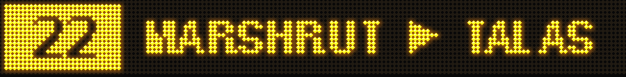
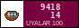

EVERY BUS AND MARSHRUTKA IN TALAS · 2 SOM AT A TIME · SINCE 2025
Every line as it hangs over the door: stops in order, the Iradi name under each, and the other lines you can change to (black = bus, white = marshrutka). Red notes are mine.
adik · Talas, Station District · stops, routes, times and carriers from the Bus Park site (transport.talas.iradgov.org), checked from a seat by the window. not official. if the 22 does not come, it is not my fault.
